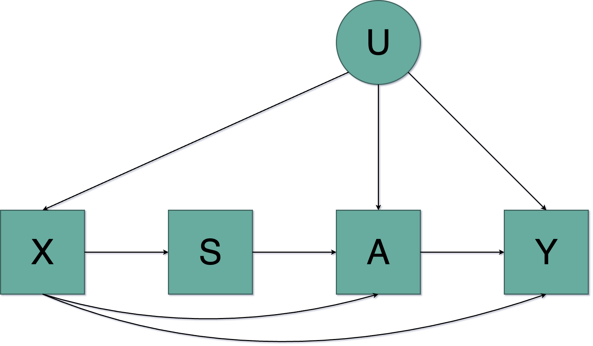
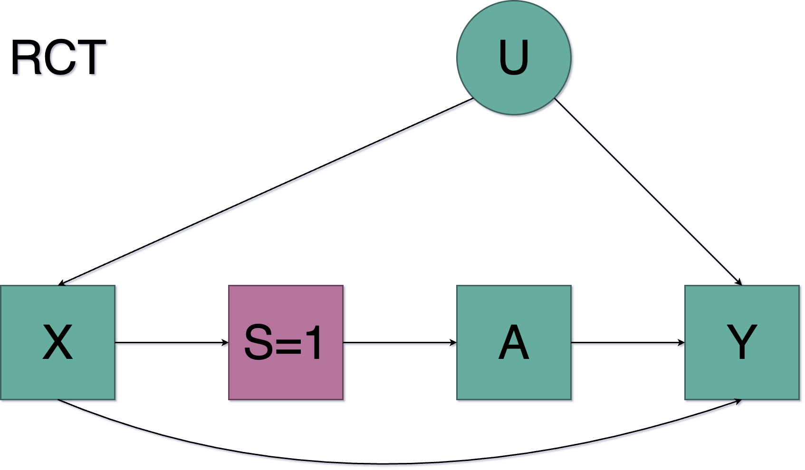
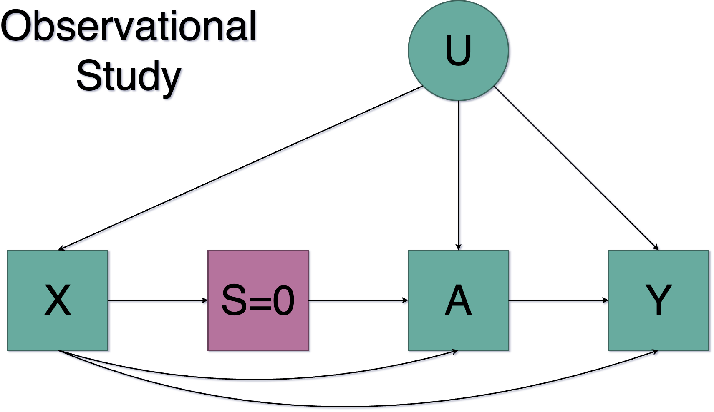
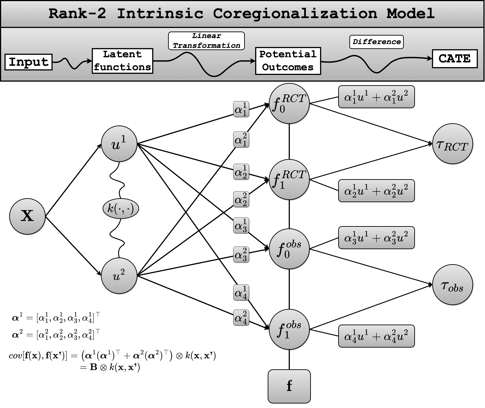
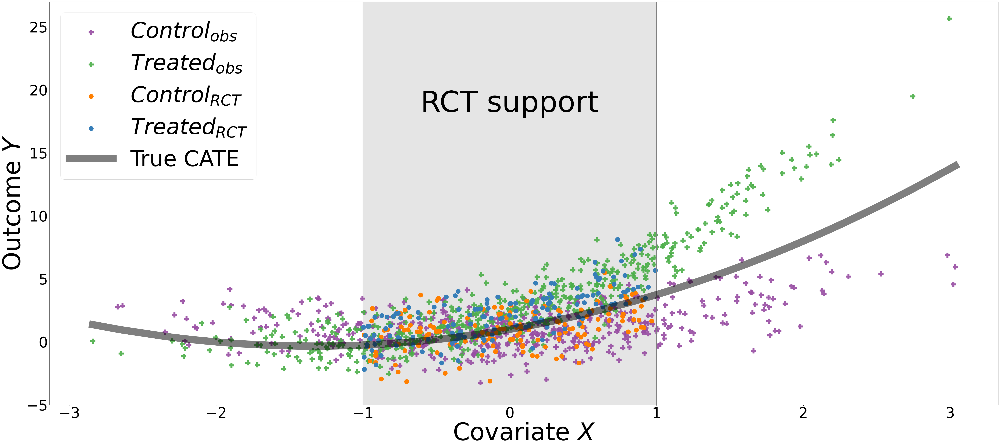
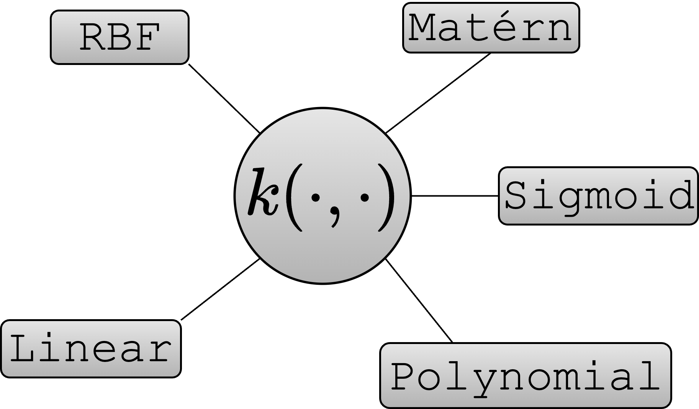

Generalizing Heterogeneous Treatment Effects to Target Populations with Gaussian Processes
Abstract
Randomised control trials (RCT) are widely considered the gold standard for making causal predictions and assessing treatment effects, due to their high internal validity that comes with randomisation. However, the strict eligibility criteria often lead to small samples not representative of the target population and as a result to lack of external validity. In contrast, observational studies, which often have larger sample sizes, are representative of the target population, but lack internal validity due to confounding leading to biased results. Most of the methods for combining observational and experimental studies and estimating causal effects come from the frequentist framework - such as weighting, outcome modelling or doubly robust estimators - although some work has been done recently in the Bayesian context. To obtain unbiased estimates of heterogeneous treatment effects for the target population represented by the observational study, we propose a Bayesian non-parametric approach based on Gaussian Processes, where the RCT data are used to correct the confounding effect on the observational data. Our method does not require full covariate overlap between the RCT and the observational samples and yields a quantification of the uncertainty. We demonstrate our method’s performance through a simulation study.
Problem Setting and Notation
We follow the Potential Outcomes framework (Rubins, 1974), where each individual is represented by a random tupple \(\left(\textbf{X}, Y(0), Y(1), A, S\right)\) with distribution \(P\), where
\(\textbf{X}\) is a \(p\)-dimensional vector of covariates (including confounders, effect modifiers).
\(A\): a binary treatment, with \(A=1\) for the treated and \(A=0\) for the control individuals.
\(Y(\alpha)\): the outcome had the individual been assigned to treatment \(\alpha\), for \(\alpha \in \{0,1\}\).
\(S\): a binary study indicator, with \(S=1\) indicating the RCT and \(S=0\) indicating the observational study.
Our goal is to estimate the Conditional Average Treatment Effect (CATE), which is defined as following:
\[ \tau(\textbf{x}) = \mathbb{E}[Y(1)-Y(0):\textbf{X} = \textbf{x}] \]
which we can make even more specific if we take into account the data source, i.e. the RCT and the observational study:
\[ \tau_0(\textbf{x}) = \mathbb{E}[Y(1)-Y(0):\textbf{X} = \textbf{x}, S=0] \]
\[ \tau_1(\textbf{x}) = \mathbb{E}[Y(1)-Y(0):\textbf{X} = \textbf{x}, S=1] \]
A fundamental problem is that we don’t get to observe the potential outcomes \(Y(\alpha)\), but we only get to observe the factual outcomes under the treatment the individual was assigned to. In order to be able to identify the Conditional Average Treatment Effect from the RCT and the observational study we need to make some assumptions.
Identifiablity Conditions
Assumption 1 (Consistency): \(Y=AY(1)+(1-A)Y(0)\)
Assumption 1 states that the factual outcome is the potential outcome under the actual treatment assigned to the individual.
Assumption 2 (Randomization): \(Y(0), Y(1) \perp \!\!\! \perp A|S=1,\textbf{X}\)
Assumption 2 is related to the internal validity of the RCT, and implies that the treatment is independent of the potential outcomes given the covariates.
Assumption 3 (Ingorability on trial participation): \(Y(0),Y(1) \perp \!\!\! \perp S|\textbf{X}\)
Assumption 4 (Mean exchangeability): \(\mathbb{E}[Y(\alpha)| \textbf{X} = \textbf{x}, S=1] = \mathbb{E}[Y(\alpha)|\textbf{X} = \textbf{x}]\), for all \(\textbf{x}\) and \(\alpha=0,1\).
Assumption 5 (Sample ignorability for treatment effects): \(Y(1)-Y(0) \perp \!\!\! \perp S|\textbf{X}\)
Assumption 6 (Transportability of the CATE): \(\tau_0(\textbf{x}) = \tau_1(\textbf{x})\) for all \(\textbf{x}\)
Assumption 7 (Positivity of trial participation): \(0<\mathbb{P}(S=1|\textbf{X}=\textbf{x})<1\)
Assumption 8 (Positivity of treatment assignment): \(0<\mathbb{P}(A=1|\textbf{X}=\textbf{x})<1\)
Under those assumptions we can identify the (study specific) CATE using the following formula:
\[ \tau_S(\textbf{x}) = \mathbb{E}[Y|\textbf{X} = \textbf{x}, A=1, S=s] - \mathbb{E}[Y|\textbf{X} = \textbf{x}, A=0, S=s] \]
Directed Acyclic Graph
The DAG describing the problem of combining two different sources of data (a RCT and an observational study) is the following.

Conditioning on the study we get the following two directed acyclic graphs, one for the RCT and one for the observational study.

In the RCT there is no arrow connecting the hidden confounder \(U\) with the treatment \(A\) nor an arrow connecting the baseline covariates \(X\) with the treatment \(A\), implying that there is no confounding in the RCT.

On the contrary, in the observational study we see that there is an arrow connecting the unobserved confounder \(U\) both with the treatment \(A\) and the outcome \(Y\) implying that the dataset is confounded. The same also holds for the baseline covariates \(X\).
Intrinsic Coregionalization Model
Introduction
Formally, the classical supervised learning problem requires estimating the output for any given input \(\textbf{x}_*\); an estimator \(f_*(\textbf{x}_*)\) is built on the basis of a training set consisting of \(N\) input-output pairs \(S=\left(\textbf{X}, \textbf{Y}\right) = \{(\textbf{x}_1,y_1),\cdots,(\textbf{x}_N,y_N)\}\). The input space \(\mathcal{X}\) is usually a space of vectors, while the output space is a space of scalars. By extending the scalar output learning to the multiple output learning (MOL) we have that the output space is a space of vectors as well; the estimator is now a vector valued function \(\textbf{f}\). Indeed, this situation can also be described as the problem of solving \(D\) distinct classical supervised learning problems, where each problem is described by one of the components \(f_1,\cdots,f_D\) of \(\textbf{f}\). The key idea is to work under the assumption that the problems are in some way related. The goal is then to exploit the relationship among the problems to improve upon solving each problem separately.
Gaussian Processes for Vector Valued Functions
In the vector valued case, the random variables are associated to different processes \(\{f_d\}_{d=1}^D\) evaluated at different values of \(\textbf{x}\).
The vector-valued function \(\textbf{f}\) is assumed to follow a Gaussian Process:
\[ \begin{equation} \textbf{f} \sim \mathcal{GP}\left(\textbf{m},\textbf{K}\right) \end{equation} \]
where \(\textbf{m}\in \mathbb{R}^D\) is a vector the components of which are the mean functions \(\{m_d(\textbf{x})\}_{d=1}^D\) of each output and \(\textbf{K}\) is a positive matrix valued function with dimension \(ND \times ND\) and with entries \(\left(\textbf{K}(\textbf{x}_i, \textbf{x}_j) \right)_{d,d'}\) for \(i,j=1,\cdots,N\) and for \(d,d'=1,\cdots,D\). More explicitly,
\[ \textbf{K}(\textbf{X},\textbf{X})= \begin{bmatrix} \left(\textbf{K}(\textbf{X}_1, \textbf{X}_1) \right)_{1,1} & \cdots & \left(\textbf{K}(\textbf{X}_1, \textbf{X}_D) \right)_{1,D} \\ \vdots & \cdots &\vdots \\ \left(\textbf{K}(\textbf{X}_D, \textbf{X}_1) \right)_{D,1} & \cdots & \left(\textbf{K}(\textbf{X}_D, \textbf{X}_D) \right)_{D,D} \end{bmatrix} \]
The entries \(\left(\textbf{K}(\textbf{x}, \textbf{x}') \right)_{d,d'}\) in the matrix \(\textbf{K}(\textbf{x}, \textbf{x}')\) correspond to the covariances between the outputs \(f_d(\textbf{x})\) and \(f_{d'}(\textbf{x}')\) and express the degree of correlation or similarity between them.
For a set of inputs \(\textbf{X}\), the prior distribution over the vector \(\textbf{f}(\textbf{X})\) is given by
\[ \begin{equation} \textbf{f}(\textbf{X}) \sim \mathcal{N}\left(\textbf{m}(\textbf{X}), \textbf{K}(\textbf{X}, \textbf{X})\right) \end{equation} \]
where \(\textbf{m}(\textbf{X})\) is a vector that concentrates the mean vectors associated to the outputs and the covariance matrix \(\textbf{K}(\textbf{X}, \textbf{X})\) is the one described in above.
In a regression context, the likelihood function for the outputs is often taken to be a Gaussian distribution, so that
\[ p(\textbf{y}|\textbf{f}, \textbf{x}, \Sigma) = \mathcal{N}(\textbf{f}(\textbf{x}), \Sigma) \]
where \(\Sigma \in \mathbb{R}^{D\times D}\) is a diagonal matrix with elements \(\{\sigma_d^2\}_{d=1}^D\).
For a Gaussian likelihood, the predictive distribution and the marginal likelihood can be derived analytically. The predictive distribution for a new vector \(\textbf{x}_*\) is
\[ p\left(\textbf{f}(\textbf{x}_*)|\textbf{S},\textbf{f}, \textbf{x}, \phi\right) = \mathcal{N}\left(\textbf{f}_*(\textbf{x}_*), \textbf{K}(\textbf{x}_*, \textbf{x}_*) \right) \]
with
\[ \textbf{f}_*(\textbf{x}_*) = \textbf{K}_{\textbf{x}_*}^\top \left(\textbf{K}(\textbf{X},\textbf{X})+\boldsymbol{\Sigma}\right)^{-1}\bar{\textbf{y}} \]
\[ \textbf{K}_*(\textbf{x}_*,\textbf{x}_*) = \textbf{K}(\textbf{x}_*,\textbf{x}_*) - \textbf{K}_{\textbf{x}_*}\left(\textbf{K}(\textbf{X},\textbf{X})+\boldsymbol{\Sigma}\right)^{-1}\textbf{K}_{\textbf{x}_*}^\top \]
where \(\boldsymbol{\Sigma} = \Sigma\otimes \textbf{I}_N\), \(\textbf{K}_{\textbf{x}_*} \in \mathbb{R}^{D\times D}\) has entries \((\textbf{K}(\textbf{x}_*, \textbf{x}_j))_{d,d'}\) for \(j=1,\cdots,N\) and \(d,d' = 1,\cdots,D\) and \(\phi\) denotes a possible set of hyperparameters of the covariance function \(\textbf{K}(\textbf{x},\textbf{x}')\) used to compute \(\textbf{K}(\textbf{X}, \textbf{X})\) and the variance of the noise of each output \(\{\sigma_d^2\}_{d=1}^D\).
Separable Kernels and Sum of Separable Kernels
Multi-output class of kernel functions that are formulated as a sum of products between a kernel function for the input space alone and a kernel function that encodes the interactions among the outputs are called separable kernels and sum of separable kernels.
We consider the class of kernels of the form
\[\left(\textbf{K}(\textbf{x},\textbf{x}')\right)_{d,d'} = k(\textbf{x},\textbf{x}')k_T(d,d')\] where \(k\),\(k_T\) are scalar kernels on \(\mathcal{X}\times \mathcal{X}\) and \(\{1,\cdots,D\} \times \{1,\cdots,D\}\) respectively.
Equivalently, one can consider the matrix expression
\[ \textbf{K}(\textbf{x},\textbf{x}')=\textbf{B} k(\textbf{x},\textbf{x}') \]
where \(\textbf{B}\) is a \(D\times D\) symmetric and positive semi-definite matrix. We call this class of kernels separable since the contribution of input and output is decoupled.
In the same spirit a more general class of kernels is given by
\[ \textbf{K}(\textbf{x},\textbf{x}') = \sum_{q=1}^Q k_q(\textbf{x},\textbf{x}')\textbf{B}_q \]
For this class of kernels, the kernel matrix associated to a data set \(\textbf{X}\) has a simpler form and can be written as
\[ \textbf{K}(\textbf{X},\textbf{X}) = \sum_{q=1}^Q \textbf{B}_q \otimes k_q(\textbf{X},\textbf{X}) \]
where \(\otimes\) represent the Kronecker product between matrices. We call this class of kernels sum of separable kernels.
Rank-2 ICM
We want to combine and observational study and a RCT to obtain an unbiased estimate of the CATE on the observational study (which is representative of the target population).
In order to estimate the study specific CATEs we need to estimate four different quantities:
\[ \mathbb{E}[Y|X=x, T=0, S=0] \]
\[ \mathbb{E}[Y|X=x, T=1, S=0] \]
\[ \mathbb{E}[Y|X=x, T=0, S=1] \]
\[ \mathbb{E}[Y|X=x, T=1, S=1] \]
Under the identifiability conditions, these quantities represent the potential outcomes on each study.
In the ICM, the outputs are expressed as linear combinations of independent random functions and in our particular case as the weighted sum of two latent functions, described with the same kernel (rank-2 model).
The parameterization is the following:
We assume that each output is associated with a potential outcome and we construct the model in the following way:
We sample from a GP \(u(\textbf{x})\sim\left(\textbf{0}, k(\textbf{x},\textbf{x}')\right)\) twice to obtain \(u^1(\textbf{x})\) and \(u^2(\textbf{x})\).
We obtain \(f_0^{RCT}(\textbf{x})\), \(f_1^{RCT}(\textbf{x})\), \(f_0^{obs}(\textbf{x})\) and \(f_1^{obs}(\textbf{x})\) by linearly transforming \(u^1(\textbf{x})\) and \(u^2(\textbf{x})\) as following:
\[ f_0^{RCT}(\textbf{x}) = \alpha_1^1u^1(\textbf{x})+\alpha_1^2u^2(\textbf{x}) \]
\[ f_1^{RCT}(\textbf{x}) = \alpha_2^1u^1(\textbf{x})+\alpha_2^2u^2(\textbf{x}) \]
\[ f_0^{obs}(\textbf{x}) = \alpha_3^1u^1(\textbf{x})+\alpha_3^2u^2(\textbf{x}) \]
\[ f_1^{obs}(\textbf{x}) = \alpha_4^1u^1(\textbf{x})+\alpha_4^2u^2(\textbf{x}) \]
where \(u^1\) and \(u^2\) are independent.
For a fixed value of \(\textbf{x}\) we can group \(f_0^{RCT}(\textbf{x})\), \(f_1^{RCT}(\textbf{x})\), \(f_0^{obs}(\textbf{x})\) and \(f_1^{obs}(\textbf{x})\) in a vector \(\textbf{f}(\textbf{x})\)
\[ \textbf{f}(\textbf{x}) = \begin{bmatrix} f_0^{RCT}(\textbf{x})\\ f_1^{RCT}(\textbf{x})\\ f_0^{obs}(\textbf{x})\\ f_1^{obs}(\textbf{x}) \end{bmatrix} \]
If we define \(\alpha^1 = [\alpha_1^1, \alpha_2^1, \alpha_3^1, \alpha_4^1]\) and \(\alpha^2 = [\alpha_1^2, \alpha_2^2, \alpha_3^2, \alpha_4^2]\) then the covariance for \(\textbf{f}(\textbf{x})\) is given in terms of the covariance functions for \(u_q^i(\textbf{x})\), \(i=1,2\) and \(q=1,2,3,4\)
\[ \begin{multline} \left(\alpha^1\left(\alpha^1\right)^\top +\alpha^2\left(\alpha^2\right)^\top\right)\otimes k(\textbf{x}, \textbf{x}')=\\ =\begin{bmatrix} (\alpha_1^1)^2+(\alpha_1^2)^2 & \alpha_1^1\alpha_2^1+\alpha_1^2\alpha_2^2 & \alpha_1^1\alpha_3^1+\alpha_1^2\alpha_3^2 & \alpha_1^1\alpha_4^1+\alpha_1^2\alpha_4^2\\ \alpha_2^1\alpha_1^1+\alpha_2^2\alpha_1^2 & (\alpha_2^1)^2+(\alpha_2^2)^2 & \alpha_2^1\alpha_3^1+\alpha_2^2\alpha_3^2 & \alpha_2^1\alpha_4^1+\alpha_2^2\alpha_4^2 \\ \alpha_3^1\alpha_1^1+\alpha_3^2\alpha_1^2 & \alpha_3^1\alpha_2^1+\alpha_3^2\alpha_2^2 & (\alpha_3^1)^2+(\alpha_3^2)^2 & \alpha_3^1\alpha_4^1+\alpha_3^2\alpha_4^2 \\ \alpha_4^1\alpha_1^1+\alpha_4^2\alpha_1^2 & \alpha_4^1\alpha_2^1+\alpha_4^2\alpha_2^2 & \alpha_4^1\alpha_3^1+\alpha_4^2\alpha_3^2 & (\alpha_4^1)^2+(\alpha_4^2)^2 \end{bmatrix}\otimes k(\textbf{x},\textbf{x}') = \\ =\textbf{B}\otimes k(\textbf{x},\textbf{x}') \end{multline} \]
The rank of the matrix \(\textbf{B}\) is equal to the number of independent latent functions \(u\) we use to describe the outcomes, i.e. equal to 2.
Following this parameterisation, we can obtain the CATE of each dataset by simply taking the difference of the potential outcomes, i.e.
\[ \tau_{RCT}(\textbf{x}) = f_1^{RCT}(\textbf{x}) - f_0^{RCT}(\textbf{x}) \]
\[ \tau_{obs}(\textbf{x}) = f_1^{obs}(\textbf{x}) - f_0^{obs}(\textbf{x}) \]
A graphical representation of the rank-2 ICM method is showed bellow:

Uncertainty
Apart from estimating the Conditional Average Treatment Effect, we also need to to estimate the uncertainty of our prediction on the prediction inputs \(\textbf{X}^*\).
For a set of inputs \(\textbf{X}\), the prior distribution over the vector \(\textbf{f}(\textbf{X})\) is given by:
\[ \textbf{f} = \begin{bmatrix} f_0^{RCT}(\textbf{X}^1)\\ f_1^{RCT}(\textbf{X}^2)\\ f_0^{obs}(\textbf{X}^3)\\ f_1^{obs}(\textbf{X}^4) \end{bmatrix} \sim \mathcal{N} \left( m=\begin{bmatrix} m_1(\textbf{X}^1)\\ m_2(\textbf{X}^2)\\ m_3(\textbf{X}^3)\\ m_1(\textbf{X}^4) \end{bmatrix}, K=\begin{bmatrix} K^{11} & K^{12} & K^{13} & K^{14}\\ K^{21} & K^{22} & K^{23} & K^{24}\\ K^{31} & K^{32} & K^{33} & K^{34}\\ K^{41} & K^{42} & K^{43} & K^{44} \end{bmatrix} \right) \]
where \(K^{ij} = b_{ij}k(X^i,X^j)\), \(i,j=1,2,3,4\) and \(k(\cdot,\cdot)\) the kernel of the ICM model.
We have that \(K \in \mathbb{R}^{(N_1+N_2+N_3+N_4)\times (N_1+N_2+N_3+N_4)}\).
The covariance matrix of the prediction is given by the following expression:
\[ V=K_{**}-K_*^\top(K+\Sigma)^{-1}K_* \]
where
\[ K_*=\begin{bmatrix} K^{11}_* & K^{12}_* & K^{13}_* & K^{14}_*\\ K^{21}_* & K^{22}_* & K^{23}_* & K^{24}_*\\ K^{31}_* & K^{32}_* & K^{33}_* & K^{34}_*\\ K^{41}_* & K^{42}_* & K^{43}_* & K^{44}_* \end{bmatrix} \]
with \(K^{ij}_* = b_{ij}k(X^i,X^*)\), \(K_* \in \mathbb{R}^{(N_1+N_2+N_3+N_4)\times(4N_*)}\).
\[ K_{**}=\begin{bmatrix} K^{11}_{**} & K^{12}_{**} & K^{13}_{**} & K^{14}_{**}\\ K^{21}_{**} & K^{22}_{**} & K^{23}_{**} & K^{24}_{**}\\ K^{31}_{**} & K^{32}_{**} & K^{33}_{**} & K^{34}_{**}\\ K^{41}_{**} & K^{42}_{**} & K^{43}_{**} & K^{44}_{**} \end{bmatrix} \]
with \(K_{**}^{ij} = b_{ij}K(X^*,X^*)\) , \(K_{**} \in \mathbb{R}^{(4N_*)\times(4N_*)}\)
and \(\Sigma \in \mathbb{R}^{(N_1+N_2+N_3+N_4) \times (N_1+N_2+N_3+N_4)}\) a noise matrix.
As a result, \(V\) is going to take the following form:
\[ V=\begin{bmatrix} V^{11} & V^{12} & V^{13} & V^{14}\\ V^{21} & V^{22} & V^{23} & V^{24}\\ V^{31} & V^{32} & V^{33} & V^{34}\\ V^{41} & V^{42} & V^{43} & V^{44} \end{bmatrix}\in \mathbb{R}^{(4N_*)\times (4N_*)} \]
Let’s say for example we want to estimate the uncertainty/variance of the CATE that was obtained through the RCT sample:
\[ \tau_1(\textbf{X}^*) = f_1^{RCT}(\textbf{X}^*)-f_0^{RCT}(\textbf{X}^*) \]
These two quantities to the following matrix:
\[ V_{\tau_1} = \begin{bmatrix} V^{11} & V^{12} \\ V^{21} & V^{22} \end{bmatrix} \]
where \(V^{12}=V^{21}\) represents the cross-covariance between the different outcomes.
So, the covariance matrix of the difference, i.e. the quantity \(\tau_1\) is given by:
\[ var(\tau_1) = V^{22}+V^{11}-2V^{12} \in \mathbb{R}^{N_* \times N_*} \]
where the diagonal elements of this matrix are the variances of the quantity \(\tau_1\).
Simulation Study
Data Generating Process
For both datasets the treatment is generated as: \(T \sim Bernoulli(0.5)\). In the RCT the observed covariate \(X\) is generated as \(X_{S=1} \sim Uniform[-1,1]\) and the unobserved confounder as \(U_{S=1}\sim \mathcal{N}(0,1)\).
In the observational study the covariate \(X\) and the hidden confounder \(U\) are observed as:
\[ \left(X_{S=0},U_{S=0}\right)|T_{S=0} \sim \mathcal{N}\left([0,0], \begin{bmatrix} 1 & T_{S=0}-0.5\\ T_{S=0}-0.5 & 1 \end{bmatrix} \right) \]For both datasets the outcome is generated as \(Y=1+T+X+2\cdot T\cdot X +0.5X^2 +0.75\cdot T \cdot X^2 +U +0.5\epsilon\).
The Potential Outcomes are
\[ Y_0(X) = 1+X+0.50X^2 \]
\[Y_1(X) = 2+3X+1.25X^2\] and the CATE is
\[ \tau(X) = 1+2X+0.75X^2 \]
The data and the true functional form of the CATE are depisted on the figure:

Estimation Methods
In order to estimate the CATE we trained a rank-2 ICM where each potential outcome is considered an output for the model. We also estimated the the CATE using a technique proposed by Kallus et al (2018) where the RCT is used to deconfound the CAATE estimated on the observational study. This “deconfounding”is done using a bias/confounding function, which is a function trying to capture the bias introduced on the observational data by the hidden confounders. This function is assumed to be parametric and it has the following form:
\[ \eta(\textbf{x}) = \tau_{RCT}(\textbf{x}) - \tau_{obs}(\textbf{x}) \]
and can be well approximated by a function with low complexity (e.g. linear).
Results
The results of the different approaches are depicted on the following figure:

To compare the different models, we computed the Mean Square Error:
| MSE | |
|---|---|
| \[ \hat{\tau}_{Kallus} \] | 0.569751423740531 |
| \[ \hat{\tau}_{obs}^{ICM} \] | 1.175507693180824 |
| \[ \hat{\tau}_{RCT}^{ICM} \] | 0.157628030012711 |
We notice that the CATE estimation obtained by the RCT part of the coregionalization model performs better than both the observational part of the ICM model and the method proposed by Kallus et al.
Conclusion
Multi-output GPs appear to be effective in estimating heterogeneous treatment effects under the presence of hidden confounding when combining observational and experimental studies.
The ICM does not require full covariate overlap between the different studies.
Each potential outcome is considered to be a separate output of the multi-output model.
The CATE estimate using the ICM experimental part yielded the lowest MSE, over-performing state of the art methods.
Discussion/Future Work
The following points are still under investigation:
- When using the ICM to obtain an estimate of the CATE we can also compute the uncertainty analytically. The credible intervals obtained by the ICM however seem to be very narrow - especially on the RCT support- not covering the true CATE and proving that the ICM is over-confident when predicting the CATE.


- Moreover, the model treats the different sources of data as equal, i.e. datapoints from the RCT are considered exactly equivalent to datapoints coming from the observational study. However, the RCT is considered unbiased/unconfounded and it would be a wise approach to consider those subjects as more important, i.e. to consider the RCT as a more valuable source of information and as a result assign higher weights to the individuals coming from the RCT.
- Last, the ICM trained to estimate the CATE in the simulation study was defined using the RBF kernel for the independent latent functions. However, the choice of another kernel might yield better results.

(Kallus, Puli, and Shalit 2018; Alvarez, Rosasco, and Lawrence, n.d.; Alaa and Schaar 2017)